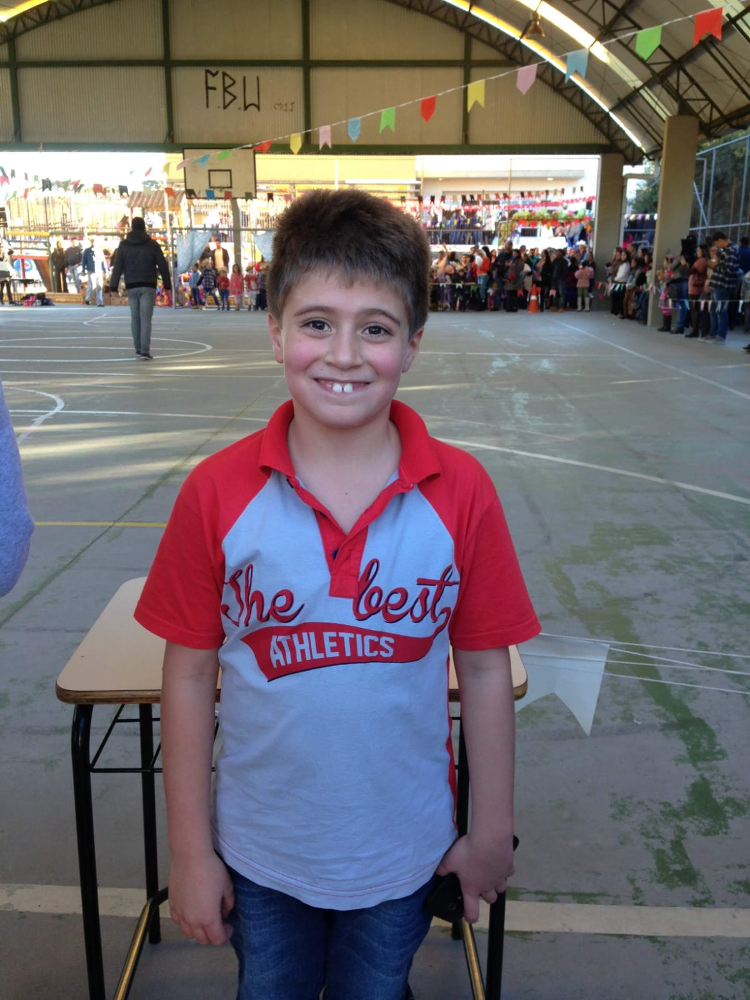

Memórias Escolares
Um resgate cronológico das nossas histórias, desafios e momentos inesquecíveis.
Ensino Fundamental I (1º ao 5º ano)
Anos Iniciais

aqui foi dos meus 5 anos até os 10, minha memoria é boa o suficiente para lebrar das 2 copas do mundo (uma no brasil). Foi quando aprendi a ler e escrever, contas de multiplicação e divisão, alem de ser a época mais despreucupada da minha vida
Ensino Fundamental II (6º ao 9º ano)
Anos Finais
De uma escola nova, passando pela conturbada e antissocial pandemia até mudar para a escola atual no 9° ano, foi nessa época que decidi oque ia fazer depois da escola, e aprendi quem eu realmente sou
1º Ano do Ensino Médio: 2023
O Novo Desafio: A Mania

De longe o periodo mais conturbado da minha vida até agora: uma mania bipolar precosse com pcicose, amizades brigas e Billie Eilish, tudo no mesmo ano. (teve tambem o menino que fiquei obcecado (de um modo nada saldavel) por querer ser igual ele, mas isso é detalhe)
o primeiro 2º Ano do Ensino Médio: 2024
A Depressão

Esse foi o ano mais triste até agora, poderia até nao conta-lo aqui, ja que metade do ano nao saia da cama (aquela mania bipolar de 2023 cobraria seu preço). Pelo menos esse foi o ano do diagnostico, tratamento e estabilidade
o segundo 2º Ano do Ensino Médio: 2025
O Infeliz Recomeço
Esse foi o segundo ano mais sem graça que ja tiva, eu tinha acabado de ter sido reprovado, mas pelo menos via meus amigos no intervalo, perdi quase todo o interece nas minhas materias favoritas por que tudo ficou desesperançoso
3º Ano do Ensino Médio (Terceirão): 2026
A Reta Final e Despedida
Conseguiu ser o ano mais sem graça, por mais que tenha começado com expectativas: queria muito afirmar que a escola é só para estudar mas é aonde aprendemos a socializar, e eu aprendi como é dificil forçar amizades com pessoas que você não gosta só pra não ficar sozinho, tenho um ou dois que você considera de verdade estudando com você
Portfólio de Redações
Produções textuais desenvolvidas ao longo das aulas de Língua Portuguesa e Redação.
Data: 03/03/2026
Na atualidade percebemos um aumento nos conflitos sociais, geralmente surgidos de preconceitos impostos erroneamente, baseados em pseudociências, estereótipos outras intolerâncias. Levando à exclusão social de diversas raças, etnias e minorias, além de problemas sociais herdados à gerações, relacionados a escravidão. Diante do apresentado, segundo o IBGE, 72,9% dos pretos e pardos são pobres, mesmo somando 56,8% da população, enquanto entre os brancos é de somente 18,6%, situação herdada da lei de terras, que em 1950 definiu a propriedade privada no país em uma realidade de favor aos brancos, em uma época ainda escravista, selou uma situação que dura até hoje, impedindo uma reforma agrária “natural”, que teria contribuído com uma equidade possivelmente mais definida. Além disso, preconceitos como intolerância religiosa praticadas, por exemplo, contra religiões de matriz africana são problemas ocultados pela sociedade brasileira majoritariamente cristã, segundo a pesquisa “respeite meu terreiro”, 76% dos terreiros sofrem alguma violência. Muitos religiosos sendo impedidos de praticar seus ritos devido à atos criminosos. Além disso, Brasil é o país que mais mata transexuais, segundo a associação nacional de travestis e transexuais (ANTRA) Diante do exposto, é necessário mudanças de rigidez nas leis existentes pelos poderes federais, bem como a criação de novas leis de proteção específicas direcionadas a esses grupos em busca de direitos básicos e maior equidade social e religiosa, ensino em escolas com menor dependência em religiões específicas e maior neutralidade no ensino são necessários de serem aplicados, respeito deve ser dado como fundamental desde à infância, combatendo também a longo prazo esses esteriótipos, necessário então reformas nos conteúdos escolares básicos, com o ideal de reduzir a violência na sociedade.
Data: 05/03/2026
No filme "Tempestade", de Dean Devlin, é apresentado um cenário futurista em que países controlaram o clima ameaçador com uma grande rede de satélites, porém, a realidade mostra que mesmo com um clima hostil cada vez mais concretizado, as lutas contra suas consequências em comunidades variadas têm base longe da ficção cientifica. O ciclo hidrológico é essencial para a habitabilidade de regiões continentais, mas vem apresentando alterações drásticas relacionadas às mudanças climáticas induzidas por uma sociedade poluente e dependente de petróleo, fenômenos naturais extraordinários tornam se mais comuns, as consequências vão de perdas econômicas por inundações até milhares de feridos. De antemão, vivemos em uma sociedade de base a recursos carbônicos, os la mesmos representam 80% da matriz energética mundial, segundo o internacional EI (Instituto de Energia). Essa dependência mostra a lentidão da sociedade para à transição energética, relacionado a isso, poluentes são ainda emitidos por indústrias de todos os tipos, sem resistência das comunidades nem grandes pedidos para políticas sustentáveis, a rápida mudança da temperatura média mundial, em um ritmo em que a natureza não pode lidar, já são sentidos em invernos ora rigorosos, ora amenos, e verões escaldantes, além de fenômenos naturais alterados. Além disso, fenômenos naturais de grandes proporções se tornaram frequentes. Segundo o G1, o fenômeno “El Niño”, relacionado de forma direta às enchentes do Rio Grande do Sul em 2024, se tornará mais comum e problemático, provavelmente em um ritmo que a infraestrutura das cidades (de escoamento fluvial até logística) não possa acompanhar, levando a alagamentos e grandes áreas destruídas. Prejuízos sociais são vistos anos após desastres terem acontecido, levando a anos de dificuldades m comunidades atingidas. Diante do Apresentado, se mostra urgente a necessidade da sociedade em relação à manutenção do planeta, os governos devem aumentar o investimento de processos de transição energética e incentivar empresas a fazer o mesmo, isso traria benefícios para comunidades do mundo todo que hoje sofrem com desastres como alagamentos e inundações, além de melhorar a qualidade do ar na totalidade.
Data: 20/03/2026
A atualidade, composta por problemas sociais de autoestima e autoconfiança, é marcada pelo que se chama A Quarta Revolução Industrial, com a internet sendo praticamente de acesso universal. As redes sociais permitem comparações excessivas de beleza, que pode levar a caminhos perigosos e indiscriminados para alcançar a estética padronizada pela sociedade. Medicamentos sendo usados indevidamente, como esteroides e medicamentos pensados originalmente para diabete tipo II, podem não ser mais acessíveis para os que de fato necessitam, aumentando o risco de desabastecimento. Diante do apresentado, as redes sociais possuem padrões estéticos muitas vezes excessivos exagerados e falsos, mas que levam a comparação constante entre seus usuários. Segundo o StatusOfMind, 70% dos jovens entre 18 e 24 anos consideram passar por procedimentos estéticos, segundo Comscore, a média no brasil é 46 horas por mês somente em redes sociais, isso leva a aumentos em casos de depressão e suicídio, como os gastos da saúde pública com a área da saúde mental, além de gastos com reversões de procedimentos estéticos feitos clandestinamente e consequências dos fármacos mal utilizados. Por outro lado, pessoas que são afetadas por esses estigmas de beleza, buscam maneiras improprias de adequar a esses padrões irreais, segundo o Conselho Federal de Medicina, o SUS gasta 62 bilhões de reais por ano com problemas relacionados a uso indevido de medicamentos, medicamentos emagrecedores, como, Wegovy, Mounjaru e Ozempic, usados originalmente para diabete relacionada à obesidade, passaram a ser usados em massa para emagrecimento rápido, oque causa danos em órgãos como estômago e fígado, podendo levar a morte. o uso indevido da maioria causa um problema menos visto, o desabastecimento em farmácias. Em 2023 A fabricante Novo Nordisk alertou a falta de Ozempic em relação à alta demanda, e orientou os pacientes a mudarem temporariamente o medicamento para outro de mesma classe, mostrando o risco a saude publica, para quem realmente depende como para quem usa indevidamente. Em suma, o governo, especificamente seus órgãos reguladores, devem elevar o nível de receita dos medicamentos relacionados, através de decretos oficiais, forçando a obrigatoriedade de uma receita emitida por um medico especializado para a compra, ao invés de afrouxar as normas ja existentes. Alem de bloquear a entrada de medicamentos clandestinos pelas fronteiras e operações bem preparadas para finalização de laboratórios caseiros. As escolas devem ser mais rígidas em relação a ensinar sobre respeito mútuo e diferenças, por meio de atividades didáticas, então as crianças aprenderiam sobre como lidar com comparações, alem do controle do tempo de tela. a longo prazo, diminuiriam o número de adolescentes com doenças relacionadas a autoestima, diminuindo proporcionalmente o número de casos relacionados ao uso indiscriminado de medicamentos.
Data: 18/05/2026
Nos anos 1970, o Brasil passou de um importador de alimentos para um grande exportador, título que detém até hoje, tanto na agricultura quanto na pecuária. Contudo, isso cria um impasse relacionado ao desmatamento das áreas usadas para o cultivo. Sendo o agro o principal motor do desflorestamento em andamento no país, gera-se um dilema: a possibilidade de conciliar o crescimento agropecuário e a integridade das florestas brasileiras. Ademais, o equilíbrio entre a produção agropecuária e o meio ambiente parece distante. Segundo o Banco Mundial, o desmatamento representa 11% das emissões globais de gases de efeito estufa, e o agronegócio é responsável por 90% desse índice. Nesse cenário, é perceptível como a busca por mais terras e queimadas propositais estão, em sua maioria, relacionadas à forte agropecuária brasileira. Portanto, o afrouxamento de leis de proteção e a redução de reservas ambientais estão impulsionando o desmatamento dos últimos anos. Entretanto, torna-se inviável interromper o crescimento do agronegócio brasileiro, visto que a agropecuária está entrelaçada à economia nacional. Segundo o IBGE, 30% do Produto Interno Bruto (PIB) advém da agropecuária, número que demonstra crescimento anual e expõe a dependência da economia brasileira nesse setor primário. A forte dependência impulsiona a procura por novas terras cultiváveis para aumento da produção, consequentemente levando ao desmatamento desenfreado. Em suma, constata-se que a nação brasileira depende fortemente da agricultura em múltiplos aspectos. Portanto, cabe ao Governo Federal, por meio do Ministério da Agricultura e Pecuária (MAPA), implementar políticas públicas de incentivo à produção sustentável. Isso deve ocorrer por incentivos fiscais ou financiamentos facilitados (como a ampliação do Plano ABC), para que produtores adotem práticas de baixo carbono. Desse modo, o objetivo é desincentivar os agricultores de invadirem áreas de proteção e reservas, conciliando a longo prazo, a economia à preservação das florestas.
Data: 09/06/2026
Em 2023, 2 em cada 10 pessoas declararam ter feito alguma aposta on-line. As plataformas de cassino on-line se popularizaram massivamente, acompanhadas do crescente endividamento ligado ao vício em apostas desse tipo no Brasil. Inicialmente, a maioria das chamadas "bets" era sediada em outros países para contornar a ilegalidade dessas operações no território brasileiro. O país passa por um processo de liberação dessas bets, liberando desde a propaganda até regulação do uso. Nessa perspectiva, percebe-se uma grande falta de controle e responsabilidade por parte dos apostadores, segundo DataSenado, 42% dos apostadores brasileiros jogaram já estando endividados. Grande parte das vezes, isso demonstra a fraqueza explorada pelos cassinos. Ainda no mesmo estudo, o grupo que mais aposta é composto por pessoas que recebem até 2 salários mínimos. A propaganda de "dinheiro fácil" atrai muito mais os grupos de baixa renda. Esse fato aumenta o risco de endividamentos, principalmente quando envolve pessoas com transtornos relacionados, como ansiedade, depressão e transtornos afetivos, aumentando a probabilidade do vício, principalmente entre jovens. Nesse sentido, o grande crescimento de apostadores está relacionado ao grande número de propagandas. Até o sancionamento da lei 14.790/23, a propaganda era totalmente ilegal, mas ainda massiva. Após o crescimento totalmente descontrolado, então no ano de 2024, o Governo Federal cedeu e iniciou um período de transição e, em janeiro de 2025, o mercado passou a funcionar com regulação, e uma quantidade de propagandas ainda crescente desses cassinos. A falta de limitações da quantidade de propagandas relacionadas a apostas faz com que, em transmissões ao vivo, principalmente na internet e de transmissões esportivas, quantidades excessivas de propagandas desses serviços de apostas sejam passadas a milhões de pessoas. Dessa forma, o Governo Federal e o Parlamento devem criar leis que limitem as propagandas de bets por quantidade e horário, evitando que crianças vejam em horários nobres, possivelmente aumentando a idade mínima para além dos 20 anos e exigindo verificação de identidade para as transações, idade em que se mostra maior responsabilidade. Devem ser criados projetos de leis para definir esses limites, de preferência, votados com prioridade no congresso.
Data: 11/08/2026
Na música "idontwannabeyouanymore", a cantora Billie Eilish mostra a realidade da busca pela aceitação social, muitas vezes relacionada à própria aparência e à procura pela "perfeição". Percebe-se em tempos recentes um grande aumento e criação de conteúdo fitness, influenciado principalmente pelo crescente uso de redes sociais pós-pandemia. Esses conteúdos são consumidos principalmente por jovens e, em simultâneo, existe o aumento de transtornos de ansiedade na mesma faixa etária. Tendo em vista dessa problemática, é ideal analisar o descaso governamental com a regulamentação das redes sociais. Nesse contexto, um estudo de 2021 conduzido pelo pesquisador George V. L. da Silva e colaboradores constatou o aumento da ansiedade em relação ao próprio corpo com retorno das aulas. O choque contribuiu com o aumento massivo de casos do transtorno dimórfico corporal (TDC), que leva muitas vezes jovens a buscarem intervenções cirúrgicas precocemente e podem piorar o quadro. Além disso, 1 a cada 16 estudantes já usou anabolizantes segundo o jornal da USP, com 86% de aumento entre estudantes do último ano do ensino médio. O expressivo aumento do uso de esteroides sintéticos muito se relaciona com o "culto ao corpo", influenciado pelas redes sociais, às quais se deve também o fácil acesso a esses anabólicos, comprados online sem dificuldade. Portanto, percebe-se uma cicatriz social, muitas vezes ocultada, aberta pela pandemia e o uso das redes sociais na sociedade infantojuvenil brasileira, que leva, ademais, a problemas de saúde física e mental. Desse modo, o governo deve, através de leis e uso da Autoridade Nacional de Proteção de Dados, regulamentar conteúdos indevidamente normalizados de culto ao corpo aos jovens, além de bloquear sites, anúncios e contas de vendedores de anabólicos. Temporalmente, menos jovens e adolescentes terão tido algum contato com o tal conteúdo, garantindo assim maior segurança aos jovens.
Data: 09/09/2026
Povos originários e direitos constitucionais: desafios para a efetivação da cidadania indígena no Brasil
Data: 14/09/2026
Na música "Another Brick in the Wall", de Pink Floyd, é exposto um sistema escolar que cria pessoas idênticas e sem grande individualidade. Assim, ao inserir a imagem criada pela obra no contexto digital, infere-se um problema relacionado a grupos de informação homogêneos criados pelos algoritmos, nos quais recebem conteúdos parecidos entre si, que estão atrelados fortemente a problemas como a polarização política e ao consumismo. Diante desse cenário, percebe-se a influência das bolhas de conteúdo na política e na democracia. No caso do escândalo da Cambridge Analytica em 2018, dados de 87 milhões de usuários do Facebook foram vazados e usados para direcionar campanhas políticas, influenciando as eleições presidenciais dos Estados Unidos de 2016. Assim, é conhecido o poder de manipulação de grandes grupos por meio do controle de informação e pela venda massiva de dados pelas chamadas "BigTechs". Ademais, o controle e direcionamento de anúncios chamativos para usuários propícios a compras compulsivas têm se expandido como problema. Segundo levantamento do SPC Brasil, 44% dos consumidores online realizam compras por impulso, número diretamente relacionado à exposição continua a ofertas personalizadas pelos algoritmos. Desse modo, é sabida a existência de um grande compartilhamento indevido de dados de usuários entre redes sociais e empresas de venda digital. Em suma, o controle informativo e a mercantilização de dados pessoais de usuários têm se expandido para afetar desde a opinião até economias e a democracia. Portanto, o Congresso Nacional deve, através de projetos de lei, enrijecer normas de compartilhamento de dados do usuário e limitar propagandas exageradas, enquanto a Autoridade Nacional de Proteção de Dados (ANPD) deve endurecer a fiscalização sobre empresas responsáveis por reter esses dados. Desse modo, espera-se a degradação do monopólio informacional sobre dados de usuários e do consumismo digital, como a não utilização de dados para campanhas políticas ou manipulações coletivas por parte das grandes empresas.
Data: 23/09/2026
Em 2018, o incêndio no Museu Nacional transformou em cinzas parte do acervo do país. Na atualidade, nota-se a prevalência dos desafios para preservação dos monumentos nacionais. Cenário impulsionado não somente pelo descaso com a distribuição de verbas, mas também pela própria desvalorização da herança cultural por parte da sociedade. Diante desse cenário, percebe-se esquecimento coletivo da herança cultural e histórica, como demonstra a invasão do Congresso Nacional por militantes, que ocasionou a destruição de diversas obras históricas. Portanto, percebe-se grande desvalorização histórica por parte da população. Além disso, prevalece um descaso do Estado em relação à proteção dos arquivos históricos do país. Segundo o jornal O GLOBO, os valores para manutenção do Museu Nacional nos meses anteriores ao incêndio chegaram a valores mínimos ou nulos, que levou à deterioração dos circuitos elétricos (causa do incêndio). Assim, a falta de verbas para mantimento de patrimônios históricos e culturais se mostra um problema real no país. Em suma, percebe-se a necessidade de reverter o esquecimento popular e abandono estatal em relação a patrimônios e monumentos históricos. Para isso, o Poder Executivo Federal deve, junto ao Poder Legislativo, redistribuir verbas para manutenção do arquivo nacional e fortalecer a história nacional no currículo escolar, fazendo isso através de Decretos Presidenciais e Projetos de Lei, visando o mantimento da memória popular em relação aos arquivos e monumentos do país.
Data: 14/10/2026
Na musica “Pangeia” de Fabio Brazza, é dito: “somos mais que nomes de condados e paises”, se referindo ao atual preconceito em relação a migração existente na sociedade atual. Atualmente, países economicamente desenvolvidos como os Estados Unidos mantêm forte preconceito, mesmo necessitando fortemente da mão de obra de imigrantes, enquanto no Brasil, o preconceito vem crescendo indiscriminadamente contra venezuelanos e haitianos, levando a problemas sociais e a exclusão social. Nesse contexto, percebe-se uma hipocrisia em países como os Estados Unidos, em que existe a dependência da mão de obra barata de imigrantes e ao mesmo tempo crescente preconceito contra os mesmo. Em 2024, quase 20% da força de trabalho de baixa qualificação americana era realizada por imigrantes, oque demonstra forte dependência do país em mão de obra imigrante para trabalhos de base, como na construção. Ademais, existe crescente desconfiança por parte dos brasileiros em relação a haitianos è venezuelanos. Em 2023, cresceram em 252% os casos de xenofobia virtual em relação ao ano anterior, parte se deve por prejulgamentos errôneos generalizados em reação a origem dessas populações. Portanto, é notável o crescente preconceito contra imigrantes. Assim, o poder executivo deve, junto ao poder legislativo, endurecer leis contra preconceito de origem, como a xenofobia e o racismo e garantir ensino a importância da imigração em escolas, aumentando as penas e facilitando os acessos a denúncia, visando freiar o crescimento do preconceito em escolas e diminuir os índices de crimes relacionado a xenofobia.
Data: 21/10/2026
No filme “Geostorm”, após um rápido avanço das mudanças climáticas, as nações criam uma rede de satélites de controle de clima para evitar a extinção humana. Fora da ficção, percebe-se um avanço rápido do aquecimento global e fenômenos como o “El Niño” se tornando mais extremos e frequentes. Em razão disso, torna-se necessário e cada vez mais urgente a preparação de infraestrutura de alerta precoce e atualização das normas de construção civil. Diante desse cenário, percebe-se aumento da frequência e intensidade de fenômenos recorrentes como o “El Niño”. Segundo a Organização Meteorológica Mundial (OMM), por mais que à anomalia exista a mais tempo que a própria humanidade, a mesma vem apresentando recordes de temperatura e de menor tempo entre os eventos, mudança intensificada de forma direta pelo aquecimento global. Ademais, é notável a infraestrutura precária e ausência de sistemas de aviso em áreas de risco para desastres. Segundo pesquisas da Universidade Federal do Rio Grande do Sul (UFRGS), na maioria dessas localidades (grande parte de baixa renda) as construções são incapazes de resistir a grandes ventos. Além disso, a mesma pesquisa avaliou a falta de infraestrutura de alerta precoce, lenta em celulares e ausente em meios públicos (como sirenes em áreas externas), que impede que a população busque proteção com antecedência. Em suma, percebe-se aumento drástico da ocorrência de eventos como o “El Niño” e tornados e suas consequências, acompanhados da grande falta de preparação das agências de Defesa civil. Portanto, cabe ao Poder Executivo, da União e dos estados (presidente e governadores) o aumento de verbas para a Defesa Civil no âmbito federal, estadual e municipal, além da criação de projetos de infraestrutura relacionada ao monitoramento meteorológico e a criação de sistemas de alerta, visando preparação das cidades em áreas de risco para antes, durante e após uma grande tempestade. Dessa forma, através de avisos para proteção antecipada, a população pode buscar áreas seguras em escolas e edifícios (resistentes a ventanias) e os órgãos de defesa civil e saúde devem estar preparados para consequências no pós-desastre.